今天我们发布prime-rl 0.6.0版本。该版本使我们（以及你）能够以最高效率在繁重的Agentic工作负载上训练万亿参数规模的模型。我们一直在不懈地优化RL基础设施，以最大化大型MoE模型上的性能，降低在Agentic工作流上对OSS模型进行后训练所需的成本、时间和痛苦。我们能够在仅28个H200节点上，以高达131k的序列长度、小于5分钟的step时间和256个rollout的batch size，在SWE任务上训练GLM-5。
在本文中，我们将介绍促成这些结果的所有优化，从低精度推理和训练，到prefill和decode分离式推理部署。我们将以zai-org/GLM-5.1作为模型示例，但我们的优化适用于任何大型混合专家（MoE）模型，例如moonshotai/Kimi-K2.7-Code、nvidia/NVIDIA-Nemotron-3-Ultra-550B-A55B-BF16等。
使用prime-rl，在Slurm集群上只需一条命令即可运行GLM-5.1训练：
uv run rl @ examples/glm5_llmd/rl.toml --output-dir /shared/outputs/glm5-llmdprime-rl从零开始构建，旨在支持高效的Agentic后训练，采用异步RL。Agentic任务通常存在长尾异常值；这些rollout可能需要几个小时，尤其是长周期编码任务。如果等到这些rollout完成后再更新策略，会导致GPU利用率不足并损害性能。异步RL通过允许在trainer部署上的优化器step完成后立即更新推理策略来解决这一问题。在异步RL中，trainer和inference是分离的，可以独立优化。
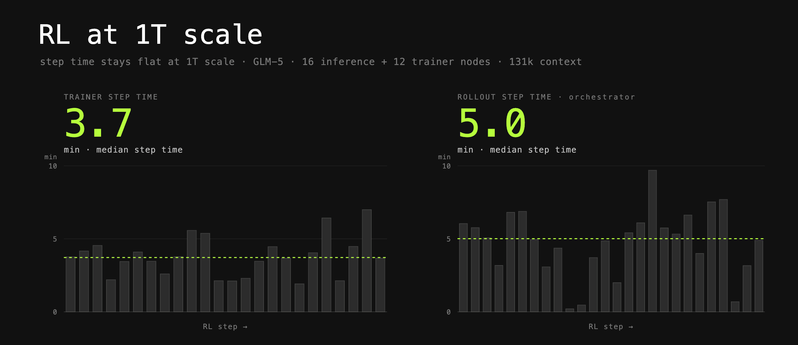
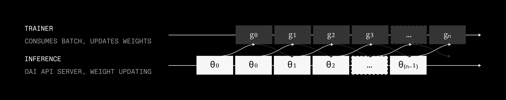
trainer和inference之间存在一个固有的同步点：策略更新。每次优化器step后，rollout策略会用新权重更新。在prime-rl中，新权重一可用就立刻更新。为了不拖慢推理，已分发的rollout不会重置活跃前缀缓存：这些rollout由各种策略生成的token组成，KV缓存也由多个版本产生。然而，新的rollout，即使与旧的共享前缀，也会重新填充自己的KV缓存；我们使用KV-cache salt来强制这一点。最后，如果请求由过旧的策略生成，会被直接丢弃；通过max_off_policy_steps值控制。
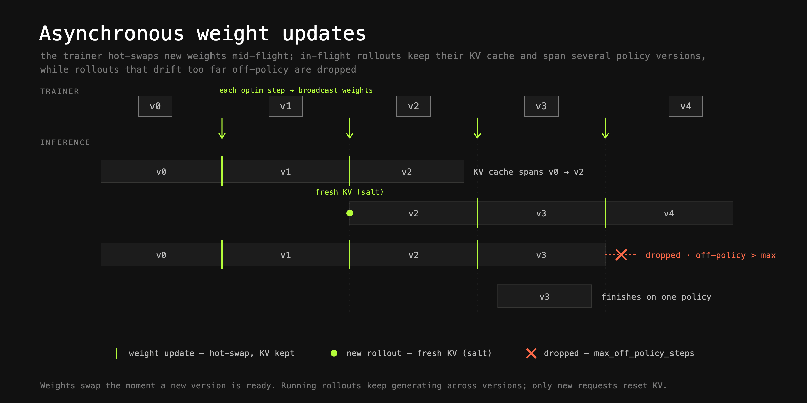
这些交互从系统优化的角度提出了一个有趣的问题：如何优化trainer和inference两个系统，同时保持它们兼容。
在接下来的章节中，我们将剖析这两个系统以及我们所做的优化。
Inference是RL训练生命周期中的关键部分。这是模型与环境的交互之处，产生被评估并赋予奖励的rollout。其中一些能力已存在于推理框架中；其他的我们与vLLM、Dynamo等框架密切合作，只有一个目标：为社区提供经过验证、易于使用的最高性能推理配方。
推理吞吐通常是RL系统的瓶颈。推理吞吐在prefill和decode部署上都从更低精度中受益匪浅。我们大量使用FP8推理，配合DeepEP和DeepGEMM的优化内核，实现更低的延迟和更高的吞吐。
在其他关于推理性能的文章中，你可能注意到很多关注点都在最小化延迟、为用户实现最高交互性。RL并非如此：我们的主要目标是最大化吞吐，同时将延迟保持在一定范围内（稍后详述）。
实现这一目标的最佳配置之一是Wide EP：大规模专家并行，通常跨 ≥32个GPU。为最大化吞吐，我们将这一策略与大数据并行rank结合，例如32，创建一大组GPU，每个持有独立的专家，各自作为独立的端点提供服务。同步按层进行，分别在dispatch和combine操作中完成。
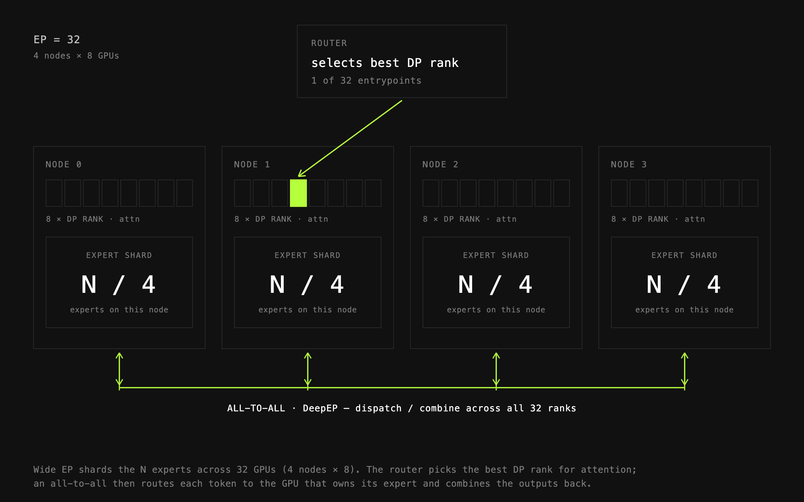
Prefill吞吐是agentic rollout的一大瓶颈：某些model↔env组合产生的prefill:decode token比高达4:1。如果让同一批推理worker同时服务prefill和decode请求，会增加端到端延迟，显著削弱PipelineRL的优势。
如前所述，RL的优先级是最大化推理吞吐，而非最小化延迟。然而，如果推理批次被prefill请求主导导致延迟剧增，可以观察到完成的推理rollout出现「分组」现象，导致trainer和inference step的重叠度很低。
使用prime-rl可以无缝使用P/D分离。当prefill和decode worker分离时，长prefill请求（冗长的工具输出等）不会阻塞decode worker，使它们能以可预测的延迟推进。这能更快地完成模型的turn，工具调用更快到达沙箱执行，如此循环，有时跨越数百个turn。
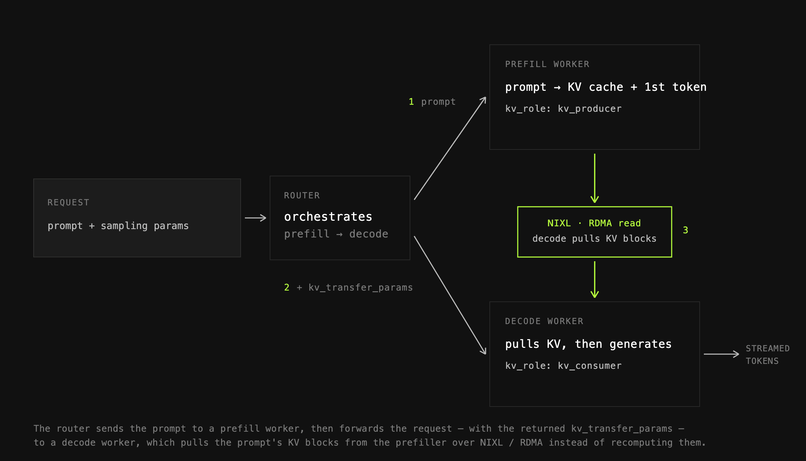
最大化吞吐需要高并发，这反过来需要大量的KV缓存空间。如果没有足够的空间，会发生KV缓存抖动和前缀缓存命中率低，从而降低吞吐。prime-rl紧跟推理框架的新特性并端到端支持它们：其中一个例子就是KV缓存卸载。
我们使用原生的vLLM卸载和Mooncake，支持分层的KV缓存卸载到CPU和磁盘。有了更多的KV缓存空间，我们可以提高并发度，摊销更多trainer成本。
这两种方法之间主要有两处差异：vLLM原生卸载是一种简单的方法，为每个worker（DP rank）创建一个单独的CPU/磁盘池；只有该worker能从这个缓存加载。而Mooncake Store作为一个集中式存储，将来自所有客户端（节点）的RAM/磁盘汇集成一个大池，任何节点上的任何推理worker都能访问：这提供了显著优势，尤其是在使用更复杂的路由策略时。
为把所有环节串起来，推理请求需要被高效路由，以实现高效的前缀复用、负载感知路由等。
prime-rl中的默认路由选项是我们fork的vllm-router，一个极小、轻量的方案，能以最小的配置开销提供强劲的性能。根据你的需求，你可以选择为负载均衡、KV缓存复用或其他目标优化的路由策略。
我们还支持将NVIDIA Dynamo router作为即插即用的替代方案。这使我们能为更大规模运行开发和部署更复杂的路由策略。这些策略结合不同因素，如KV缓存复用、队列深度、KV缓存利用率或当前负载，基于推理worker的实时指标为每个worker计算得分。然后根据策略及其得分选择worker。
结合作为集中式KV缓存卸载层的Mooncake Store，这能在跨副本实现前缀缓存命中的同时公平地分配负载并对实时推理指标做出响应。
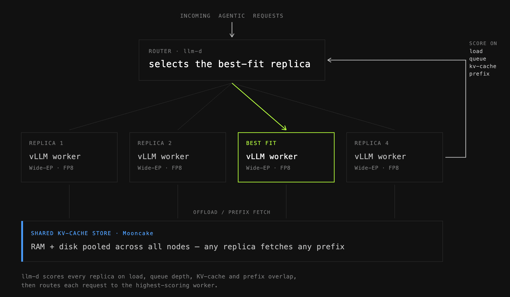
Trainer↔inference的不匹配会悄无声息地毁掉你的RL训练。为应对这一点，你可以使用router replay：prime-rl中的R3。它通过捕获推理期间做出的路由决策，并直接在trainer上回放它们来工作。这有效地将trainer和inference之间的KL失配降低一个数量级，带来更稳定的训练。
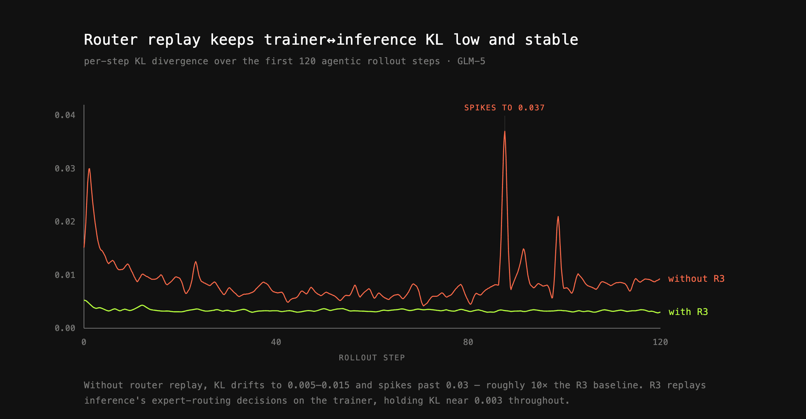
这并非免费：在大规模部署中，路由专家数据可达数十Gbps，给处理造成很大压力。这曾给我们带来不少麻烦，但现在prime-rl能在处理这些数据的同时服务数千个并发的agentic rollout。
路由专家是一个形状为 [num_layers, top_k, seq_len] 的大流量，很快能增长到数百GB，这给Python处理带来很大负担：即使像把响应转成Python字典这样看似简单的操作，也会造成显著的event-loop延迟和CPU瓶颈。为消除这一开销，prime-rl将路由专家视为不透明载荷，唯一处理由深度优化的PyTorch操作完成，减轻了CPU压力。
Router Replay与其他推理优化完全兼容，包括P/D分离，让你能轻松部署生产级技术栈。
我们的trainer基于torchtitan：一个高性能、纯PyTorch的大规模训练代码库。我们从torchtitan借鉴了大量trainer代码，涵盖FSDP、EP和各种其他抽象，同时加入我们自己的改进。
prime-rl主要依赖3维并行：确切地说是FSDP、CP和EP。每种都有各自的用例、优势和缺点。要让大规模运行顺利进行，你需要以不同程度组合使用它们。在我们的GLM-5案例研究中，三者都用上了。
下面简单回顾一下它们。
FSDP。全分片数据并行（FSDP）是我们的基线分布式策略。参数、梯度和优化器状态跨数据并行rank分片，并在前向和反向传播中按需聚合。对于1T+ 参数的模型，这是分摊完整优化器状态或参数内存占用的必要条件。我们使用PyTorch的fully_shard (FSDP2) 作为FSDP实现；这使得它易于与其他策略组合。
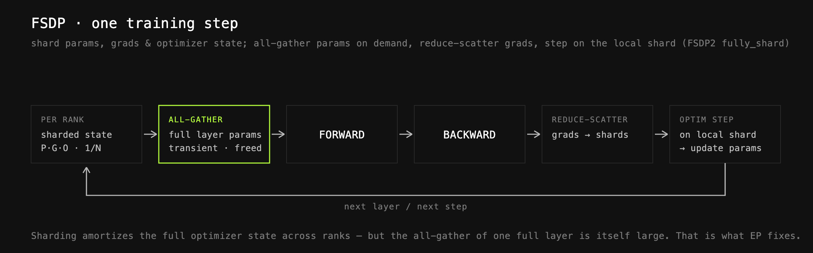
专家并行（EP）。即使在FSDP之后，大模型层在FSDP全聚合后仍然过大，无法有效装入单GPU HBM。以78层、800B参数和float32主权重为例，单层全聚合大约需要 (800B × 4) / 78 ≈ 40GB缓冲区。在1层FSDP重叠的情况下，仅活动层权重就需要约80GB内存。
这正是EP的用武之地：我们不再全聚合整个层，而是设置一个单独的内部EP度，例如EP=8，在该范围内不会聚合专家。相反，token将使用all2all原语进行分发和合并。由于专家是层内存占用的主要来源，这显著减少了活动内存。
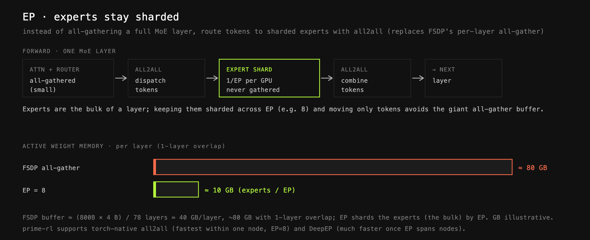
在prime-rl中我们允许两种独立的EP配置：torch-native all2all和DeepEP。根据我们的观察，torch-native在单节点EP范围（即EP=8）内吞吐略好，但跨节点时性能显著下降。这时使用DeepEP会快得多。
上下文并行（CP）。在131k+ 序列长度下，中间激活（而非参数）成为主要内存成本。上下文并行跨rank分片序列维度，以降低每个GPU的激活量。
在prime-rl中，我们为所有自定义模型支持上下文并行。我们支持两种主要的上下文并行方式：Ring Attention：批次在整个模型前向中按序列分片。当到达核心注意力时，每个rank持有自己的Q、K和V分片，同时以环式模式处理其他rank的K和V。Ulysses：与ring attention一样，数据在整个模型前向中按序列长度分片。当到达注意力时，all2all操作将布局从序列分片翻转为头分片，然后在头维度上计算注意力。注意力计算完成后，布局再用另一个all2all换回。这与大多数非标准注意力（线性注意力、Mamba等）配合良好，是我们的默认方案。
然而，也有一些例外：其中之一就是GLM-5中使用的DSA。
对于无法用Ulysses和Ring Attention并行化的注意力模型，我们编写自定义的上下文并行实现，GLM-5就是其中之一。
我们的上下文并行实现保持序列分片并计算投影。之后，K和V被收集：由于它们被投影到潜在空间，这很廉价：以便索引器能够看到完整序列。索引器为全局序列计算稀疏索引，核心注意力在这些索引上计算。由于DSA具有固定的top_k，其成本也是固定的（除了KV的内存成本，如前所述，可忽略不计）。
这种方案每个注意力层只需一次all-gather集合通信，使成本保持在最低。
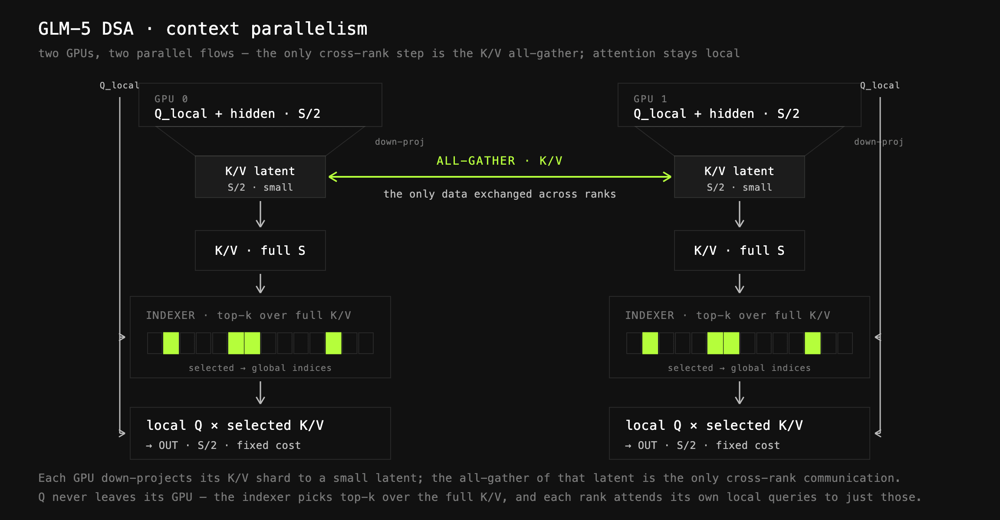
为高效计算DSA，我们使用自定义内核，大量基于参考实现并针对我们的需求进行了适配，提供快速的前向和反向。
如前所述，训练器与推理之间的不匹配可能会损害训练效果。为应对这一点，我们使用DeepGEMM内核来执行块缩放FP8，如DeepSeek V3所提出的。与普遍看法相反，由于量化开销，这实际上并不会提高吞吐量（除非在特定配置下）；然而，它大幅降低了训练器与推理之间的KL不匹配，因为两者现在使用相同的精度，甚至在某些情况下使用相同的内核。这进而使训练更加稳定。
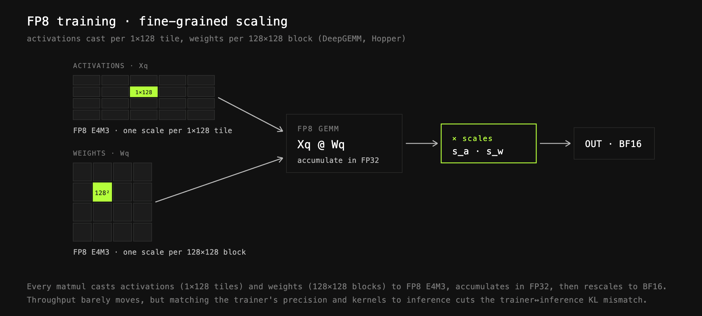
我们继续探索其他改进RL引擎性能的方法，积极与其他框架合作：尤其是vLLM、Dynamo和llm-d加快推理侧，或PyTorch打造极速的trainer：探索投机解码、NVFP4训练和推理等技术，以及容错、弹性扩展、子秒级train↔inference大模型权重传输等基础设施改进。
大规模agentic RL，在我们看来，是当今AI中最激动人心的系统挑战之一。构建高效的RL技术栈需要优化大量组件，既要单独优化又要作为整体系统优化：训练、推理、请求路由、权重广播、在途权重更新、环境、代码执行沙箱，以及更多。
在规模下，每一处开销都很重要。成功源于理解这些系统如何交互、识别瓶颈，并毫不松懈地在整个技术栈中推动效率。
如果你对此感兴趣，希望日常工作涉及大规模构建和优化这些系统、实验新的分布式训练和推理技术，并从数千个GPU中榨出最后一丝性能，我们很乐意收到你的来信。
参考：https://www.primeintellect.ai/blog/rl-at-1t-scale